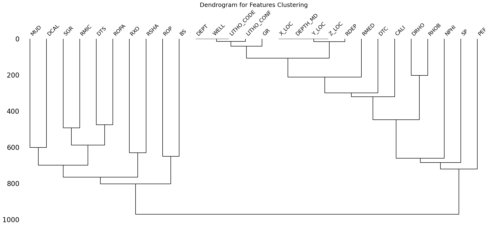
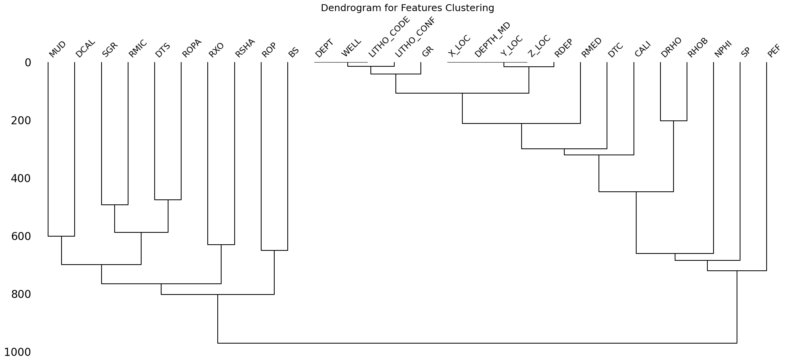
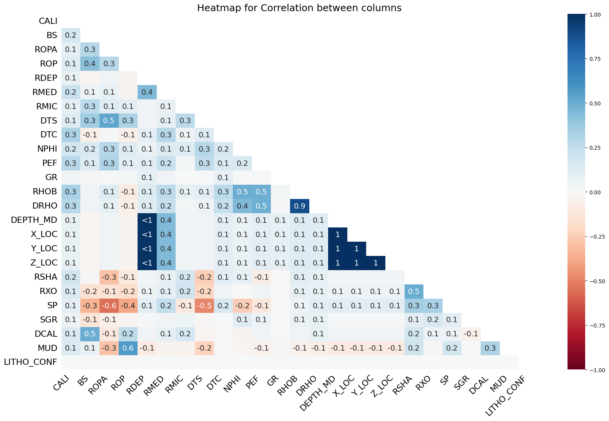
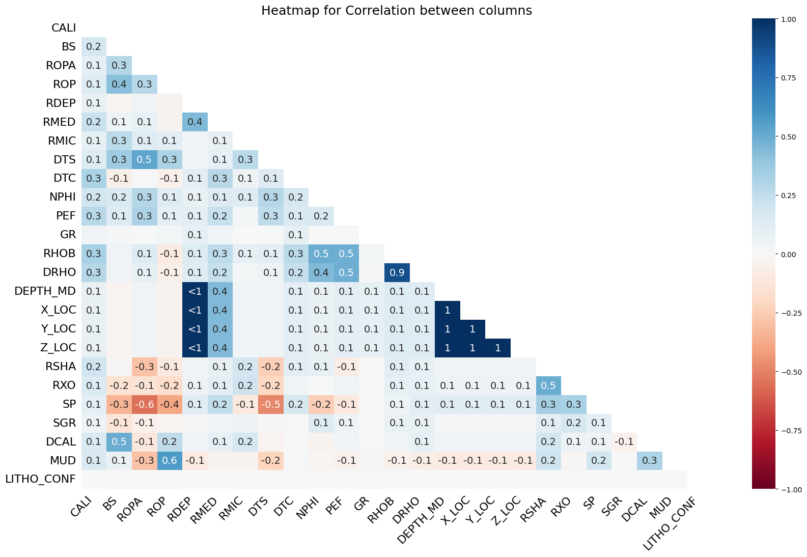

Missing Log Prediction and Lithologies Classification
for Petrophysics Well-Log Data
CSCI-5612 Machine Learning for Data Science - CU Boulder
Topic
With the development of machine learning algorithms, increasingly complex problems are being solved. In the field of oil and gas exploration, how do these algorithms support and contribute to traditional workflows, specifically in the interpretation of well-log geophysical data?
Introduction
Starting his second term, President Donald Trump declared a national energy emergency, citing an “inadequate and intermittent energy supply” that fails to meet the country's growing demands, as stated in SECTION 1 - DECLARING A NATIONAL ENERGY EMERGENCY.
One of the key activities in the energy industry is oil and gas exploration, a process that is time-consuming, costly, and requires highly skilled personnel. According to reports from the U.S. Energy Information Administration (EIA), the cost of drilling a well can exceed $4 million.
Costs of Crude Oil and Natural Gas Wells Drilled (Source: U.S. Energy Information Administration)
A survey of drilling costs for new wells in the United States from 2002 to 2007 showed that by 2007, a production well cost approximately $4 million, while a dry hole could cost as much as $6 million.
A significant portion of the operations and costs is dedicated to acquiring and interpreting well-log data, which provides crucial information on lithologies, physical indicators, and oil and gas behavior. This data plays a key role in guiding exploration and drilling decisions.
In general, well log interpretation plays a fundamental role in oil and gas exploration and the entire drilling process, as it provides critical insights into the subsurface formations. It allows geologists and engineers to identify potential hydrocarbon-bearing reservoirs by analyzing key properties such as porosity, permeability, and fluid saturation. Through various logging techniques, such as gamma-ray, resistivity, and neutron-density logging, experts can distinguish between rock types like sandstone, shale, and limestone, ensuring accurate reservoir characterization.
One of the primary objectives of well log interpretation is to evaluate the formation and estimate hydrocarbon reserves. By analyzing resistivity logs, engineers can determine whether a formation contains oil, gas, or water, while neutron-density logs provide a clear indication of porosity and fluid content. This information is crucial in estimating the volume of recoverable hydrocarbons, helping operators assess the economic feasibility of a reservoir before making significant investments in production infrastructure.
During the drilling process, well logs play a key role in optimizing operations and ensuring wellbore stability. Logging-while-drilling (LWD) and measurement-while-drilling (MWD) technologies provide real-time data that helps drillers adjust the well trajectory, allowing them to stay within the most productive reservoir zones. This not only enhances hydrocarbon recovery but also minimizes drilling risks such as differential sticking, wellbore collapse, and formation damage. Additionally, formation pressure analysis derived from well logs is crucial in detecting overpressure zones, preventing hazardous situations like blowouts and well failures.
However, due to cost and time constraints, many well-log data points are omitted or not collected, resulting in missing indicators that experts rely on for analysis. In addition, well-log interpretation often takes weeks or even months to process, depending on the number of wells and the quality of the data.
Well Log Data (Source: Kansas Geological Survey).
Well logs are printed records where each curve represents a different physical property of the rock, such as gamma ray, resistivity, and density.
They also include indicators of gas behavior.
These interpretation tasks require experienced experts with many years of specialization. However, the processes are repetitive across wells and can be learned from data.
With the rapid advancement of machine learning and deep learning algorithms, well-log interpretation can be significantly accelerated through automated analysis with high accuracy. These solutions reduce both time and costs while enabling faster and more precise drilling decisions.
Objectives
This project aims to develop machine learning models that can predict missing well-log data and classify lithologies based on the available well-log data. By automating these tasks, the accuracy of well-log interpretation could be improved, enabling faster decision-making in oil and gas exploration and drilling.
Lithology classification refers to the process of identifying and categorizing rock types based on well-log data. It is essential for understanding subsurface geology, optimizing drilling strategies, and improving reservoir characterization.

Visualization of Lithology Data (Source: Kansas Geological Survey).
A regional lithology stacked column chart showing the distribution of different rock types in the subsurface. In labeled data, lithos are classified based on expert interpretations.
Summary
Topic: Automatically Predict Missing Log and Classify Lithologies for Petrophysics Well-Log Data
Motivation: Well-log data is often expensive and requires significant effort for interpretation, impacting both costs and drilling decisions. With the advancement of machine learning algorithms, new solutions leveraging these techniques are expected to accelerate and optimize well-log data workflows, achieving high efficiency with minimal expert intervention.
Related work: Research on the application of machine learning in working with well-log data began around 2016. However, the continuous evolution of new algorithms and the development of optimized frameworks for this workflow are still ongoing.
Data sources: Will be collected from two main sources
- USGS API: Collecting raw data using APIs
- FORCE ML 2020: Downloading for labeled data
Objectives: This project focuses on developing a process that applies machine learning algorithms to work effectively with well-log data, addressing two main tasks:
- Regression: Forecasting missing well log data.
- Classification: Automating lithology classification.
Key Research Questions
- How accurately can machine learning models predict missing well-log data compared to traditional interpolation methods?
- What are the most effective machine learning algorithms for lithology classification based on well-log data?
- How does the quality and completeness of input data impact the performance of the predictive models?
- What preprocessing techniques are necessary to handle noisy or incomplete well-log data?
- Which well-log features contribute the most to accurate lithology classification?
- How well do automated classification models compare to expert interpretations in terms of accuracy and reliability?
- What are the computational costs and time efficiency of machine learning-based approaches compared to manual interpretation?
- Can the developed models generalize well across different geological formations and well locations?
- How can uncertainty in predictions be quantified and reduced in both missing log imputation and lithology classification?
- What are the practical implications of integrating these automated solutions into the oil and gas industry’s decision-making processes?


 


 
